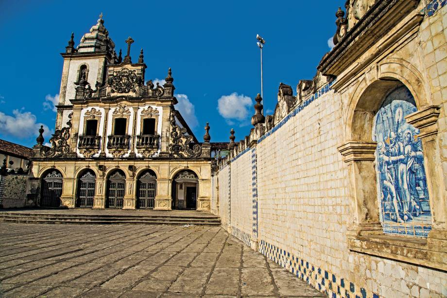

História da Cidade
Fundada em 1585, guardiã de mais de quatro séculos de arquitetura colonial.

João Pessoa foi fundada em 5 de agosto de 1585, com o nome de Nossa Senhora das Neves. É uma das cidades mais antigas do Brasil.
Ao longo de sua história, a cidade recebeu outros nomes, como Filipéia de Nossa Senhora das Neves, Frederikstad durante o domínio holandês e Parahyba. Em 1930, passou a se chamar João Pessoa, em homenagem ao político paraibano João Pessoa Cavalcanti de Albuquerque.
A cidade se desenvolveu entre o Centro Histórico e o litoral, tornando-se um importante centro político, cultural e turístico da Paraíba. Hoje, João Pessoa é conhecida por suas praias, arquitetura histórica e áreas verdes.